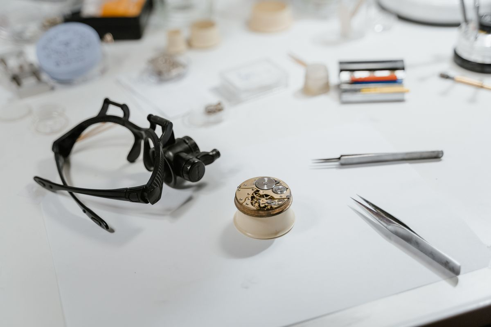

Complete watches, made whole at one bench.
“Thirty-one jewels, and every one of them placed by a person whose name is on the dial.”
Anselm Vogt designs and makes mechanical watches in Glashütte — two calibres of his own, finished by hand, assembled and regulated by the maker, and sold with the making record printed in full. What is made here is listed. What is bought in is listed too, under its own heading, in the same size of type.
Each number on the diagram names a part of Calibre AV-31, whether this workshop makes it or buys it in, and its count on the plate. Start with 10 and 11 — the honest ones.
- Calibre AV-31
- Hand-wound · 21,600 A/h · 56 h reserve
- Components on the plate
- 109, counted by group below
- Made in this workshop
- 47 of 109 — 43.1%
- Regulation, measured
- −2 / +6 s per day, five positions
- Price, printed
- €28,400 — not on enquiry
The plate, counted in full
“In-house” is a phrase this page defines before it uses. Counted by component — every wheel, screw and jewel as one — Calibre AV-31 is 43.1% made in this workshop. The jewels alone are 31 bought-in components, and no honest count can wish them away. The planner below reads these same tables; it cannot say anything the paper does not.
| Component group | Count | Origin |
|---|---|---|
| Mainplate | 1 | Made here |
| Bridges & cocks | 4 | Made here |
| Barrel assembly (drum, cover, arbor) | 3 | Made here |
| Going-train wheels & pinions | 9 | Made here |
| Balance wheel, staff & roller | 3 | Made here |
| Pallet fork & staff | 2 | Made here |
| Winding & setting work | 6 | Made here |
| Crown & ratchet wheels | 2 | Made here |
| Motion work | 3 | Made here |
| Screws cut & polished here | 14 | Made here |
| Jewels (synthetic ruby bearings) | 31 | Bought in |
| Hairspring (blued overcoil) | 1 | Bought in |
| Mainspring | 1 | Bought in |
| Balance timing screws | 8 | Bought in |
| Shock-protection springs & caps | 2 | Bought in |
| Hands | 3 | Bought in |
| Case, crystal & gaskets | 5 | Bought in |
| Dial (from a dial atelier) | 1 | Bought in |
| Screws bought in (blued here) | 10 | Bought in |
| Total 109 · Made 47 · Bought 62 | 109 | 43.1% made |
| Component group | Count | Origin |
|---|---|---|
| Mainplate | 1 | Made here |
| Bridges & cocks | 4 | Made here |
| Barrel assembly (drum, cover, arbor) | 3 | Made here |
| Going-train wheels & pinions | 9 | Made here |
| Balance wheel, staff & roller | 3 | Made here |
| Pallet fork & staff | 2 | Made here |
| Winding & setting work | 6 | Made here |
| Crown & ratchet wheels | 2 | Made here |
| Motion work | 3 | Made here |
| Screws cut & polished here | 8 | Made here |
| Jewels (synthetic ruby bearings) | 24 | Bought in |
| Hairspring (blued overcoil) | 1 | Bought in |
| Mainspring | 1 | Bought in |
| Balance timing screws | 8 | Bought in |
| Shock-protection springs & caps | 2 | Bought in |
| Hands | 3 | Bought in |
| Case, crystal & gaskets | 5 | Bought in |
| Dial (from a dial atelier) | 1 | Bought in |
| Screws bought in (blued here) | 3 | Bought in |
| Total 89 · Made 41 · Bought 48 | 89 | 46.1% made |
| Calibre | Class | Measured range |
|---|---|---|
| AV-31 | Workshop standard | −2 / +6 s per day |
| AV-31 | Fine regulation | 0 / +5 s per day |
| AV-24 | Workshop standard | −3 / +7 s per day |
| AV-24 | Fine regulation | −1 / +6 s per day |
| Calibre | Per year | On the list | Bench time |
|---|---|---|---|
| AV-31 | 14 | 9 | About 11 weeks a watch |
| AV-24 | 10 | 11 | About 9 weeks a watch |
A guaranteed 0 / +2 s per day appears in no row of Table 3, because no Vogt calibre has measured it across a production run. The planner below will refuse it rather than round toward it.

The Calibre & Regulation Planner
Choose a calibre and a regulation class. Every figure is computed from Tables 1–4 above, with the arithmetic printed line by line.
The reading, from the printed tables
This calibre's record does not support that rate claim. Its best measured range, printed in Table 3, is across five positions. The planner will not certify what the bench has not measured; if a seller guarantees you 0 / +2 on a calibre with no such record, ask to see the record.
The Order Estimator
Watch prices are printed, not quoted on enquiry. Build an order from the printed lines; owners can add a service line. The total is the price — the only figure that changes it is a choice you make here.
The order, line by line
What the workshop takes on
Werk 31 — the complete watch
Calibre AV-31 under a silvered dial, three hands, in a 38.5 mm steel case made to the workshop's drawing. Assembled, regulated and recorded by the maker; delivered with its making record and its measured rate card.
- Client
- Collectors ordering direct
- In-house
- 43.1% by component
- Regulation
- −2 / +6 s/day, measured
- Status
- List open — 9 names ahead
- Price
- €28,400
Werk 24 — the complete watch
Calibre AV-24 with small seconds at six, in a 37 mm steel case. The slower beat — 18,000 A/h — is a deliberate choice, printed here because buyers ask: it is the rate the maker prefers to regulate, and its measured range is wider for it.
- Client
- Collectors ordering direct
- In-house
- 46.1% by component
- Regulation
- −3 / +7 s/day, measured
- Status
- List open — 11 names ahead
- Price
- €21,900
Commissions on the calibre
Either calibre, with the buyer's choices where choice is real: dial finish from the dial atelier's range, hand-engraved caseback, strap. The movement itself is not redesigned per buyer — a calibre that changes with every commission has no record to print.
- Client
- Named buyers, by enquiry
- Basis
- Printed option lines, from €190
- Status
- Two commission slots a year
- Record
- Choices entered in the making record
Owner servicing & regulation
Full service and regulation for watches from this workshop only — the maker services what he made, with the watch's own record open on the bench. Other makers' watches are politely declined and referred to their makers or to a general restorer.
- Client
- Owners of Vogt watches
- Full service
- €640 (AV-31) · €590 (AV-24)
- Regulation only
- €180
- Interval
- Every 5–7 years, printed on the rate card
What moves the price
The calibre first — AV-31 costs more than AV-24 because it carries more bench hours, not more mystique. Then the choices you can point at: fine regulation, hand engraving, a second strap, each priced on its own printed line in the estimator. What never moves the price: the length of the list. A watch quoted at €28,400 is €28,400 when its turn comes, however long the wait has grown.
Watch No. 47, in its owner's words
Read the case files“The making record arrived with the watch: every component group, where it came from, and its rate in five positions. It is the first watch I have owned whose paperwork is as interesting as its movement — and the first maker who told me what he did not make.”

Twenty names are ahead of yours. That is the honest headline.
Joining the list takes a 30% deposit against a printed price, and the price does not move while you wait. If that arithmetic suits you, the enquiry page is the one path in — form and email side by side.
Enquire